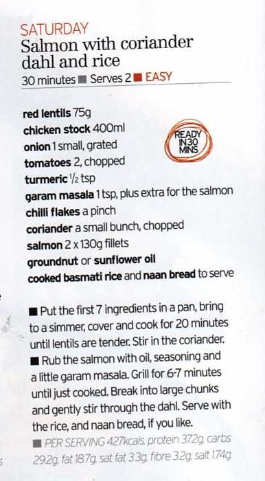

Salmon with Coriander Dahl and Rice

Ingredients
Method
- Put the 150g red lentils, 800ml chicken stock, 2 grated onions, 4 chopped tomatoes, 1 tsp turmeric, 2 tsp garam masala and chilli flakes in a pan, bring to a simmer and cover and cook for 20 minutes until the lentils are tender.
- Stir in the coriander.
- Rub the 4 salmon fillets with nut/sunflower oil, seasoning and extra garam masala.
- Grill the salmon for 6-7 mins until just cooked.
- Break the salmon into large chunks and gently stir through the dahl.
- Serve with rice/naan.